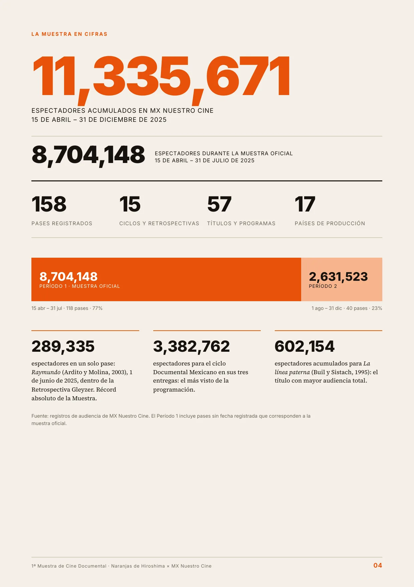
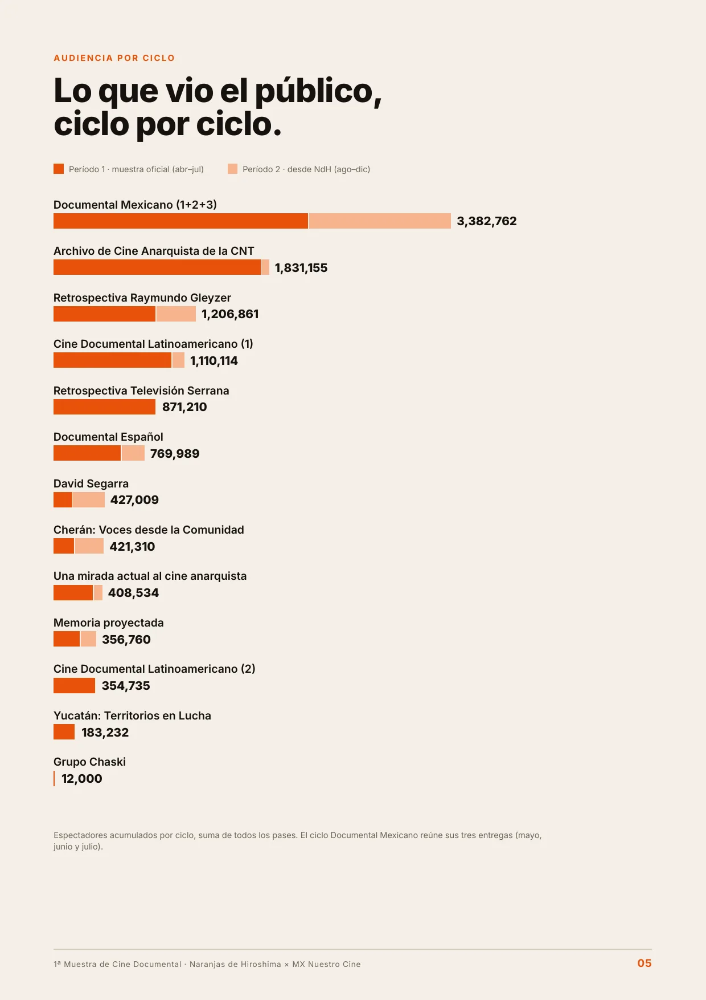
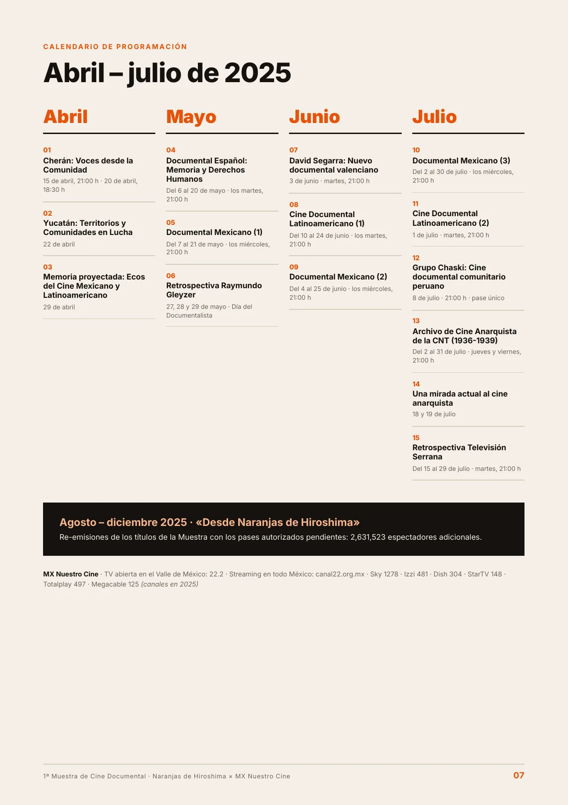
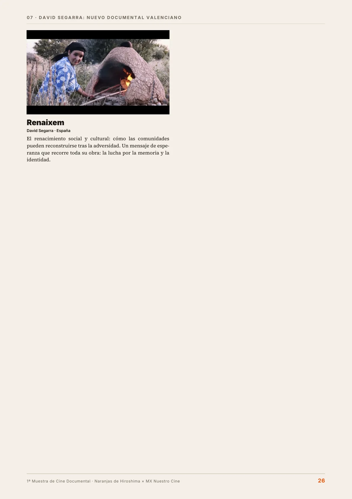
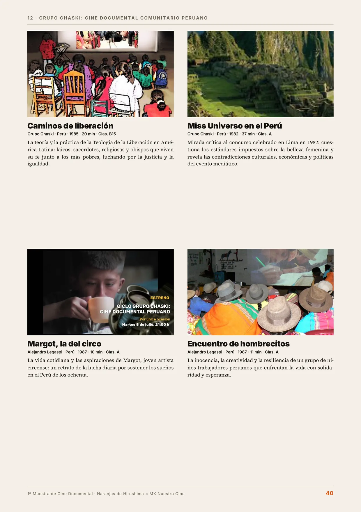
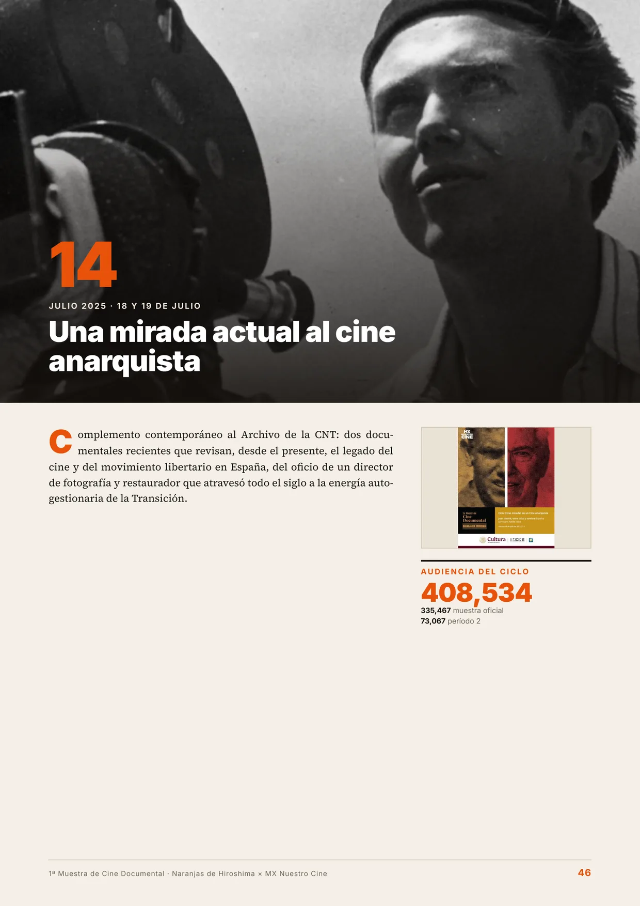
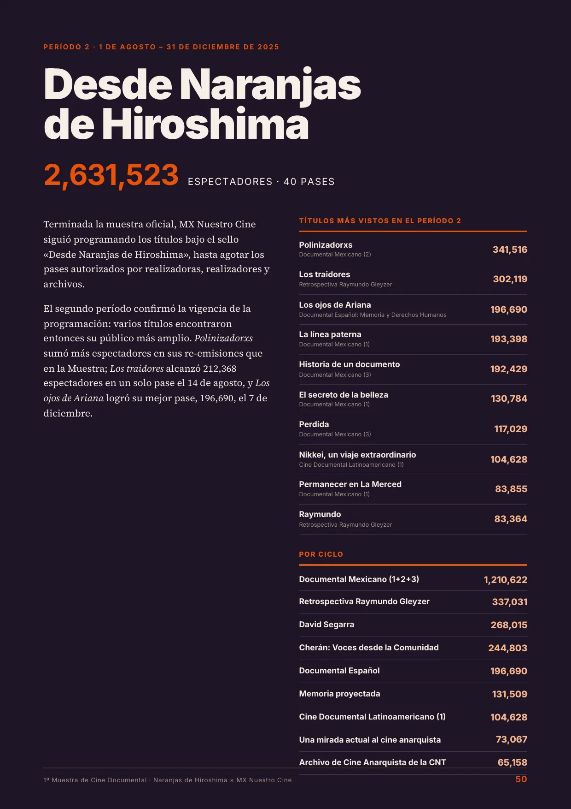
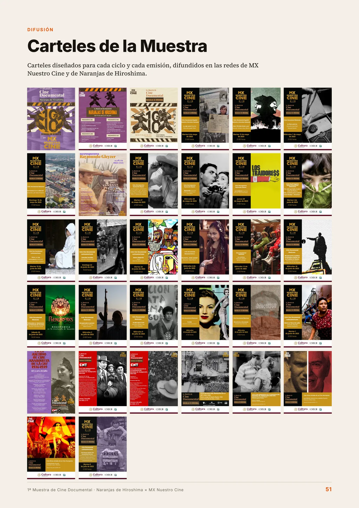
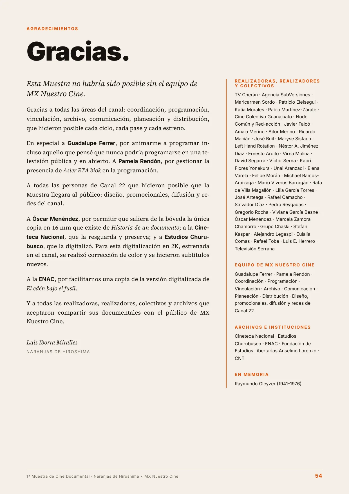

Naranjas de Hiroshima × MX Nuestro Cine · Canal 22.2
Dossier de resultados · 15 de abril – 31 de diciembre de 2025 · 11,335,671 espectadores









Pasa las páginas arrastrando la esquina, con las flechas del teclado o con los botones. Para leer la letra pequeña toca dos veces una página o pulsa «Ampliar». Los códigos QR y los enlaces se pueden pulsar: abren los promocionales en YouTube y las fichas en naranjasdehiroshima.com.